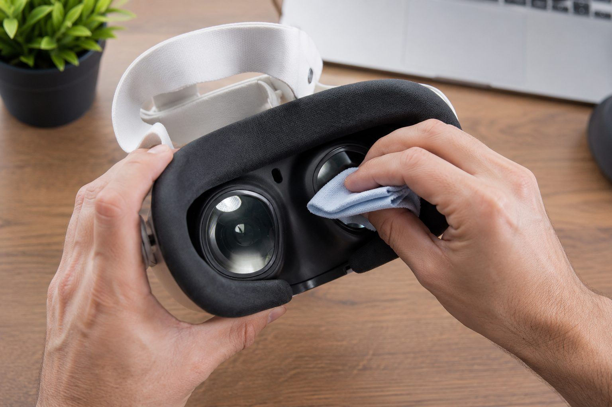

How to clean your Quest 3 lenses without ruining them

Before we get to cloths and technique, here's the single most important thing about your Quest 3 lenses — and most owners have no idea: the fastest way to ruin them isn't dust or the wrong cleaner. It's sunlight. The pancake lenses act like a magnifying glass, and if direct sun hits them — through a window, in the car, outdoors between sessions — they focus that light onto the displays and burn permanent dead spots into the screen. No cleaning fixes that. So rule one isn't about cleaning at all: never leave your headset where sunlight can reach the lenses. Store it with a lens cover on, in its case, or at least somewhere the lenses never face a window. Get that right and the rest is easy.
For actual cleaning, the method is refreshingly simple, and Meta's official advice is blunt about what not to do. Use a dry, optical-grade microfiber cloth — the kind that comes with glasses or camera gear. Wipe gently in small circles, starting at the center of the lens and working outward. That's it. That lifts the fingerprints, eyelash smudges, and dust that build up with use.
What you must never do is just as important. No alcohol. No glass cleaner. No lens-cleaner spray. No paper towels or tissues. The Quest 3 lenses carry a delicate optical coating, and any of those will scratch it or strip it permanently — and unlike a phone screen, these lenses aren't something you can easily replace. The "lens cleaner" that's fine for your glasses is exactly what wrecks a VR headset.
For a stubborn oily smudge a dry cloth won't lift, resist the urge to wet it. The safe trick is to breathe lightly on the lens — that tiny bit of condensation — and then wipe with the dry microfiber. If you want to go a step further, Meta says you can lightly dampen one corner of the cloth with a little water, never applied to the lens directly, and keep all moisture away from the seams, ports, and sensors. And before any wipe, clear loose dust first with a gentle puff of air; dragging grit across the lens is how scratches happen.
The foam facial interface against your face soaks up sweat and oil, so it needs its own care. Pop it off (press the eye-relief buttons and pull gently), wipe it with the microfiber, and for a deeper clean hand-wash the removable part with cold water and a mild soap, rinse well, and let it air-dry completely before clicking it back on — never submerge the headset itself, and no alcohol here either. If you share your headset or sweat through workouts, a silicone facial interface is worth it: it wipes clean in seconds and doesn't drink up sweat the way foam does.
The real secret is just habit. Handle the headset by the frame, not the lenses; give them a quick dry wipe after each session before grime has time to settle; and store it away from light. Do that and your Quest 3 will look through clear glass for years. Not sure the Quest 3 is even the right headset for you? Our Quest 3 vs Quest 3S guide and the quiz can sort that out.
Recommended gear
Microfiber cloth → Lens cover → Silicone facial interface (AMVR) →
Answer 7 quick questions and get a personalized match in 60 seconds.
Take the VR Finder quiz →This guide contains affiliate links. If you buy through them we may earn a commission at no extra cost to you, which helps keep vr.ar free. As an Amazon Associate, vr.ar earns from qualifying purchases. Prices and specifications are subject to change. See our Privacy Policy.